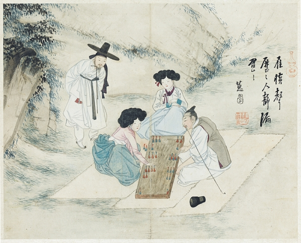
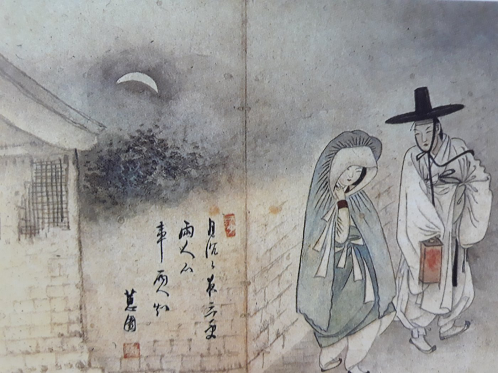
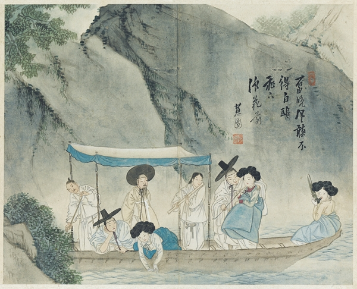
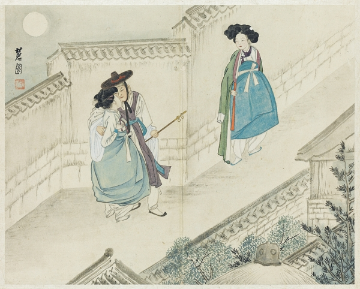

오늘은 저자 구성을 먼저 정하고, 그에 맞춰 자료 범위, 논문 방향, 투고처를 차례로 정했으면 합니다. 이어서 교수님께 확인받을 사실관계와 인용 동의 열여섯 건을 함께 봐 주세요. 논문이 무엇을 다루는지는 0. 논문 개요에 그림과 함께 정리했습니다.
「조선 풍속화의 시각 정보를 넌버벌 퍼포먼스 서사로 변환하는 대본 작성 방법론 연구: ⟨매듭: 신윤복을 엮다⟩의 개고 과정을 중심으로」 보충 초안 · 39쪽 · 각주 51개
시간은 제안입니다. 아래에서 고르거나 체크하면 칸의 상태가 바뀝니다. 원고 PDF는 회의 전에 따로 보내드립니다.
신윤복의 풍속화를 넌버벌 퍼포먼스 대본으로 옮기는 작법을 다룬 논문입니다. 〈매듭〉 대본이 2025 쇼케이스부터 La MaMa 초연까지 어떻게 고쳐졌는지 버전끼리 대조하고, 그 과정에서 쓴 방법을 원칙 다섯 가지로 정리했습니다.
| 장 | 연구 질문 | 결론의 원칙 |
|---|---|---|
| 3장 | 풍속화의 시각 정보(인물 수, 배경, 소품, 구도)를 대본의 서사 정보(감정, 관계, 사건)로 옮길 때 지킬 원칙은 무엇인가 | 원화 정밀 확인과 시각 정보의 항목화. 사실과 해석을 나누어 기록하고, 원화와 다르게 쓸 때는 무엇을 바꾸고 지켰는지 밝힌다 |
| 4장 | 스토리 설계도로서 넌버벌 대본의 문체는 어떻게 규정되고, 개고 동안 어떻게 유지되는가 | 창작 메모와 네거티브 샘플. 실제로 대본에 살아남았던 문장을 금지의 예로 적어 둔다 |
| 5.1 · 5.2 | 그림 순서와 인물 구성이 다른 복수 버전을 함께 쓸 때 무엇을 고정하고 무엇을 나누는가 | 복수 버전의 고정과 분기. 장면의 기능은 고정하고 인물 배치만 나눈다 |
| 5.3 | 장면별 감정 서술은 어떻게 전체 감정 아크로 엮이는가 | 감정 아크의 후행 통합. 구조가 정해진 뒤에 아크를 엮는다 |
| 6장 | 연습과 상연을 거친 작품을 다시 대본으로 옮길 때 서술 기준은 어떻게 달라지고, 연출의 요청은 어떻게 대본의 언어가 되는가 | 기록 대본의 서술 기준. 무대의 사건을 그림 세계 안의 동기로 쓰고, 상연 순서와 번역본에 맞춘다 |
원화는 모두 신윤복, 《혜원전신첩》, 간송미술관 소장. 앞의 두 점은 논문에 그림 1·2로 실려 있습니다.




7월 원고는 '260411'에서 멈췄는데, 2025 쇼케이스(원점)부터 2026년 9월 기록 대본까지로 넓혔습니다.
6.1~6.4절 제목: 연습실을 거친 대본, 원점의 회귀, 연출의 언어에서 서사의 언어로, 기록 대본의 서술 기준(표 3).
월하정인에서 등불을 든 사람은 선비라는 점(그림 2 추가), '치마폭…' 문장의 출처, '쌍륙삼매' 표기.
La MaMa 초연(2026년 9월 24~27일, The Downstairs)을 과거형으로, 2025년은 학내 쇼케이스로 정리했습니다.
'260913'·'260915' 댓글 21건 대조. 교수님 요청 20건 중 17건 반영, 3건은 일부 반영 또는 대조가 남음.
2025 쇼케이스 대본, '260411', '260917'의 장 순서와 핵심 요소.
논문 구성 초록 · 1장 서론(배경, 장르 특수성, 작품, 미술사적 이해, 선행연구, 연구 질문) · 2장 연구 방법(원점과 여섯 시기, 대조 절차, 연구자의 위치) · 3~6장 분석 · 7장 결론 · 부록 1 대조표 여덟 · 부록 2 창작 기준 문서 발췌
공동저자는 논문 전체를 같이 책임지니, 각 버전이 어떻게 만들어졌는지 오늘 함께 정리해 두고 싶습니다. 이 논문은 사람이 쓴 작업만 분석합니다.
이 세 자료는 제가 AI 도구(Claude)와 함께 만든 분석과 초안이라 근거에서 뺐습니다. 저장소에도 넣지 않았습니다.
그래서 9월 기록 단계는 이렇게 다룹니다. '260913'의 첫 본문은 '260902 수정본'을 바탕으로 했습니다. 9월 분석 단위는 9월 5~17일에 교수님과 제가 바꾼 내용과 댓글로 잡았습니다. '260913'·'260917' 본문의 문장은 작가의 문장 사례로 인용하지 않고, "최종 기록 대본에서 이 인물은 ~로 서술된다"처럼 상태만 씁니다.
지금 39쪽은 학술지 기준보다 깁니다. 예를 들어 「한국극예술연구」는 200자 원고지 150매 이내가 원칙입니다. 투고처를 정한 뒤 부록 1.1~1.8 가운데 남길 것을 고릅니다.
일정과 조건은 2026년 11월 22일에 각 학회 투고 규정과 KCI 페이지에서 확인했습니다. '확인 필요'로 적은 칸은 투고 전에 규정 파일이나 학회 공지를 다시 봅니다.
| 1순위 | 학술지와 맞는 점 | 분량 | 일정·자격 |
|---|---|---|---|
| 한국연극학한국연극학회의 연극학 대표 학술지, 2009년 등재지 선정 | 학회 세부 규정(hwp, 2026.10.24 개정)에 있음 | 연 3회(4월 30일, 8월 31일, 12월 31일) 발행. 정회원 투고. 마감일은 학회 공지 확인 | |
| 한국극예술연구한국 극예술 관련 연구로 한정. 이 작품이 정확히 해당 | 200자 원고지 150매 이내 원칙. 국문초록 800자, 영문초록 500단어 이내 | 마감 3월 31일·7월 31일·11월 30일, 발간 1월 31일·5월 31일·9월 30일. 정회원 한정, 심사료 5만 원. 11월 30일 마감은 회의 다음 날이라 이번 회차는 건너뜁니다. 2027년 3월 31일 투고, 5월 31일 발간이 현실적 | |
| 미학예술학연구미학 이론과 예술의 이론·실천을 함께 다룸. 그림을 공연으로 옮기는 문제를 미학 쪽으로 풀 때 | 각주·참고문헌 포함 약 7,500단어(영문 투고 규정 기준). 국문 원고 기준 | 마감 12월 15일·4월 15일·8월 15일, 발행 2월·6월·10월. 영문 규정상 심사료·게재료 없음, 회원 조건 언급 없음 | |
| 연극교육연구B안에서 교수님 글이 학생 참여 제작을 다룬다면 | 한국연극교육학회 규정 | 한국연극교육학회, KCI 등재. 연 3회(6월 30일, 9월 30일, 12월 31일) 발행 | |
| Asian Theatre Journal아시아 연극, 아시아와 서구 연극의 관계. La MaMa 초연과 잘 맞음 | 논문 6,000~8,000단어(미주 포함) | 반년간. 영어가 아닌 원고는 원문과 영어 번역을 함께 냄. 논문 외에 창작·번역 희곡도 실음. 교수님 영어 대본에 해설을 붙여 싣는 방법도 있음 | |
| Studies in Theatre and Performance실천에 기반한 연구, 대본과 실천 연구(PaR) 포트폴리오도 실음 | 논문 6,000~8,000단어 | 오픈액세스만 출판(게재료 확인) |
교수님의 설명, 댓글, 메시지에 기대어 쓴 곳과 아직 확인하지 못한 사실입니다. 회의하면서 하나씩 체크합니다. 체크 상태는 이 브라우저에만 저장됩니다.
| 확인 | 봐 주셨으면 하는 것 | 절 | 내용 | 근거 |
|---|---|---|---|---|
| 가. 인용 동의4건 | ||||
| 메시지 인용 동의 | 각주 10여 곳 | 개인 교신 각주. 뜻을 바꾸지 않는 범위에서 풀어 쓰고, 연락처 같은 개인 정보는 넣지 않음 | 2025~2026 메시지 | |
| 메시지 인용 범위 | 3.2 | 월하정인 타블로를 선물을 건네기 직전의 순간에 맞추자는 2025년 판단 | 2025.8.30 메시지 | |
| 구성안 문장을 이렇게 다뤄도 괜찮으신지 | 4.1 | 2025 구성안의 '치마폭이 열렸다가 닫히듯이'를 네거티브 샘플의 사례로 다루고 출처를 구성안으로 밝힘. 구성안 안에서는 제자리에 있던 문장이 대본으로 옮겨 오며 생긴 문제로 서술 | 2025 연출 구성안 | |
| 댓글 원문 직접 인용 | 6.3 | "큐를 놓친 배우"가 담뱃대를 든 몸종으로, "마대를 든 스태프"가 뱃사공으로 서술된 과정. 쌍검대무 "이미 자기 등장 큐를 놓친 배우가…" 댓글 한 건 | '260913' 댓글 | |
| 나. 사실·표현 확인8건 | ||||
| 경과 서술이 실제와 맞는지 | 1.3 · 6.1 | 연습 과정에서 교수님을 중심으로 다시 짜인 구조(책가도, 노리개, 전모 여인) | 9월 2일 회의 | |
| 연소답청 장면의 제안자 표기 | 3.1 | 연소답청에서 폴리 배우가 "구도가 그림과 다르다"는 신호를 주는 장면을 교수님 제안으로 밝힘 | '260913' 댓글 | |
| 해석을 나란히 적은 방식 | 3.3 | 단오풍정 봇짐 여인(새참 / 천 장사꾼 / 떡장수), 주유청강 세 쌍의 남녀 | 2025.8.28 댓글, 2025.8.31 메시지 | |
| 교수님 설계로 밝힌 표현과 회의 기록 인용 범위 | 5.2.1 · 5.3 | 전모 여인을 앨리스의 토끼에 비유, 장마다 소녀의 변화를 가리키는 열쇠말 | 9월 2일 회의 | |
| 간주의 출처, 영문 수정본 파일 | 6.4 · 부록 1.7 | 간주 I~III은 '260915'에서 처음 나타남. 9월 16일 프롤로그 순서, 월하정인 영문 수정본과 문장 대조 | '260915', 9.13·9.17 메시지 | |
| "상주하지 않았다"가 사실인지 | 2.4 · 7장 | "연구자는 연습 과정에 상주하지 않았다"는 한계 서술 | 연구자 기억 | |
| 8월 21일 시연의 명칭 | 본문 여러 곳 | "8월 21일 출국 전 국내 시연"이라는 이름을 창작산실 지원서 표현과 맞추기. 위 연표의 이름도 함께 바꿈 | 창작산실 지원서 | |
| 2025 쇼케이스의 정확한 날짜 | 원점 시기 | 2025 서울예대 예술공학센터 쇼케이스(약 40분)의 날짜를 아직 확인하지 못함 | 확인 필요 | |
| 다. 자료·사용 허가 요청4건 | ||||
| 도판·공연 사진 사용 허가 | 3장 · 6장 | 그림 1·2(간송미술관 소장) 사용 허가, 6장에 공연 사진이나 영상 캡처를 넣어도 되는지 | 도판 | |
| '260319'·'260411' 댓글 받기(내보내기 또는 이미지를 뺀 사본) | 5장 · 부록 | '260319'·'260411' 원본 문서는 이미지가 많아 댓글을 읽지 못함 | Google Docs 원본 | |
| 9월 10일 메일을 다시 보내 주실 수 있는지 | 6장 | 2026년 9월 10일에 보내 주신 메일 내용을 논문 자료로 다시 받기 | 9.10 메일 | |
| '260917' 표기 문제와 미해결 댓글을 누가 정리할지 | 아카이브 대본 | '260917'의 표기 문제 여섯 곳(띄어쓰기, 조사 빠짐, 굵게 표시 깨짐, 보이지 않는 문자)과 남은 미해결 댓글 3건 | '260917' | |